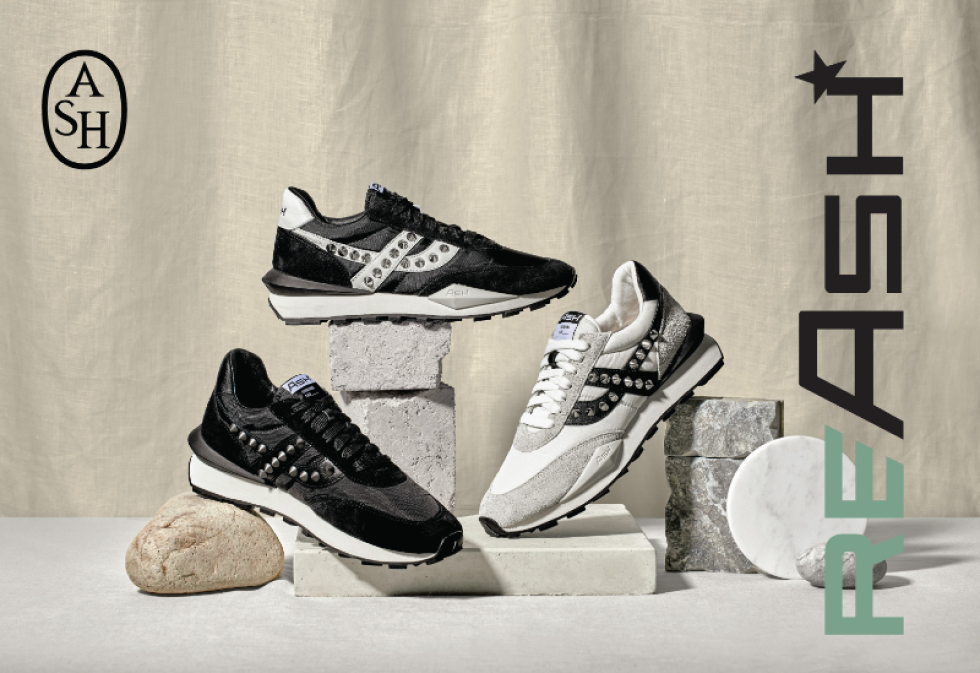
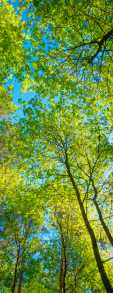

 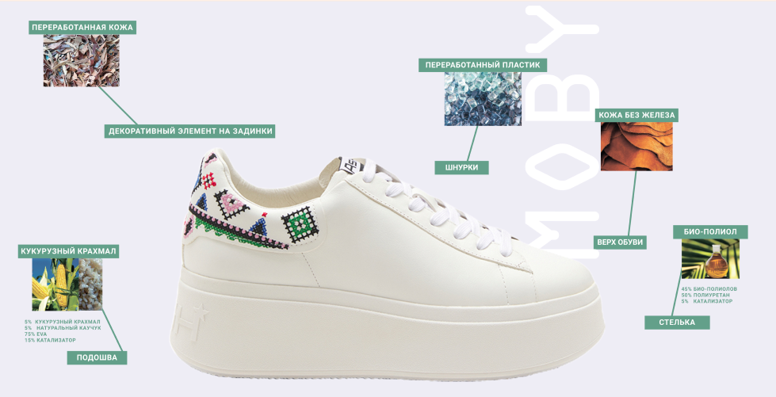
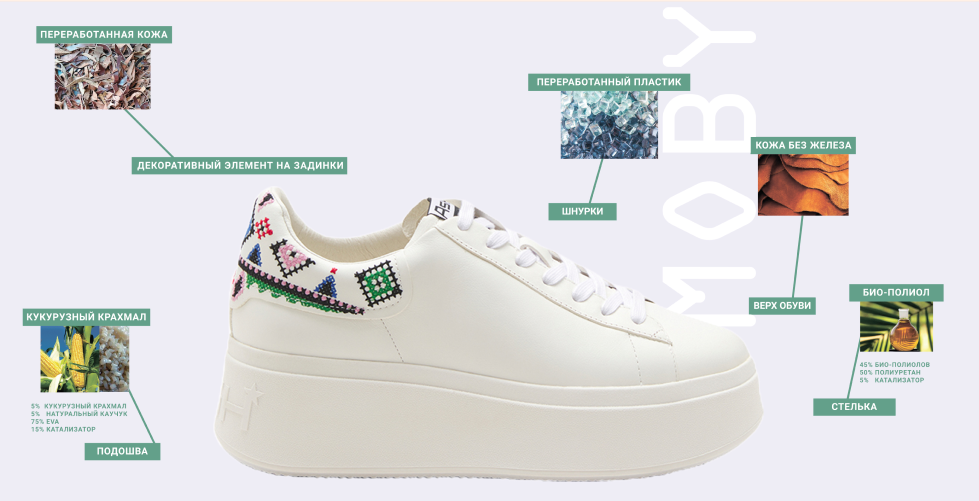
ASH
JOURNEYS
INTO
THE
GREEN
ZONE
JOURNEYS
INTO
THE
GREEN
ZONE
RE/ASH
коллекция обуви, в которой сошлись
отличный дизайн и экологичный
подход, — оба ориентированы на здоровье
человека и всей нашей планеты.
отличный дизайн и экологичный
подход, — оба ориентированы на здоровье
человека и всей нашей планеты.
SPIDER
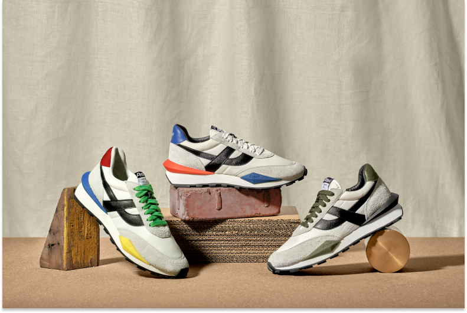
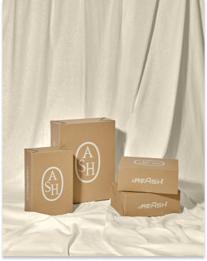
МИССИЯ
Изменение климата — проблема, которую невозможно игнорировать, особенно в индустрии моды.
Швейная и обувная промышленность — крупнейшие загрязнители, они несут ответственность за 8-10% глобальных выбросов углерода.
Пришло время для более осознанного и социально-ответственного подхода к бизнесу. Сегодня каждый участник индустрии должен вносить свой вклад в защиту и сохранение планеты для последующих поколений.
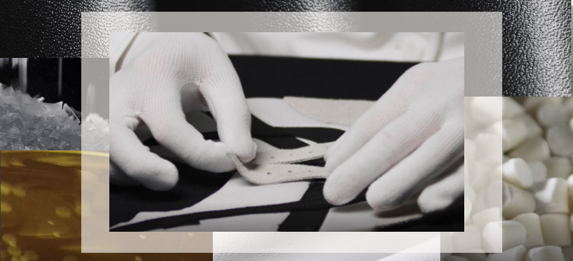
НОВЫЙ ШАГ
К ОСОЗНАННОСТИ
К ОСОЗНАННОСТИ
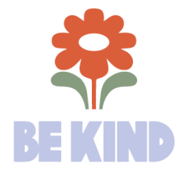
Ключевые модели RE/ASH SS’21:
кеды MOBY ETHIC, MOBY BE KIND и кроссовки SPIDER 620. Помимо актуальной весенне-летней обуви, в новой коллекции появилась спортивная эко-friendly одежда: худи, толстовки, мягкие шорты, джоггеры, майки
кеды MOBY ETHIC, MOBY BE KIND и кроссовки SPIDER 620. Помимо актуальной весенне-летней обуви, в новой коллекции появилась спортивная эко-friendly одежда: худи, толстовки, мягкие шорты, джоггеры, майки
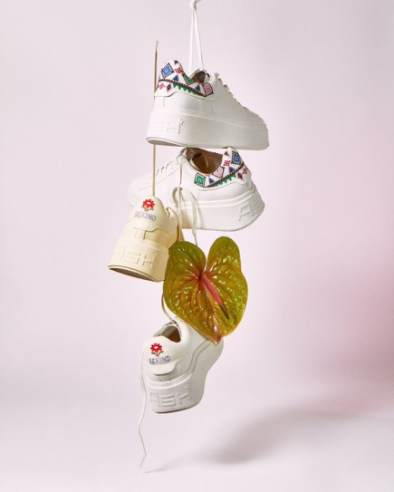
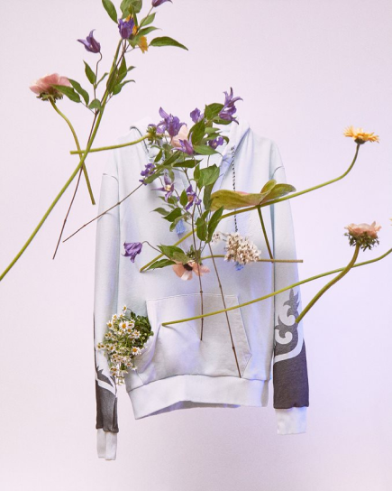
в весенне-летней эко-коллекции появилась знаковая вышивка в виде микро-цветочка — на задней части кед, майках, спортивных костюмах.
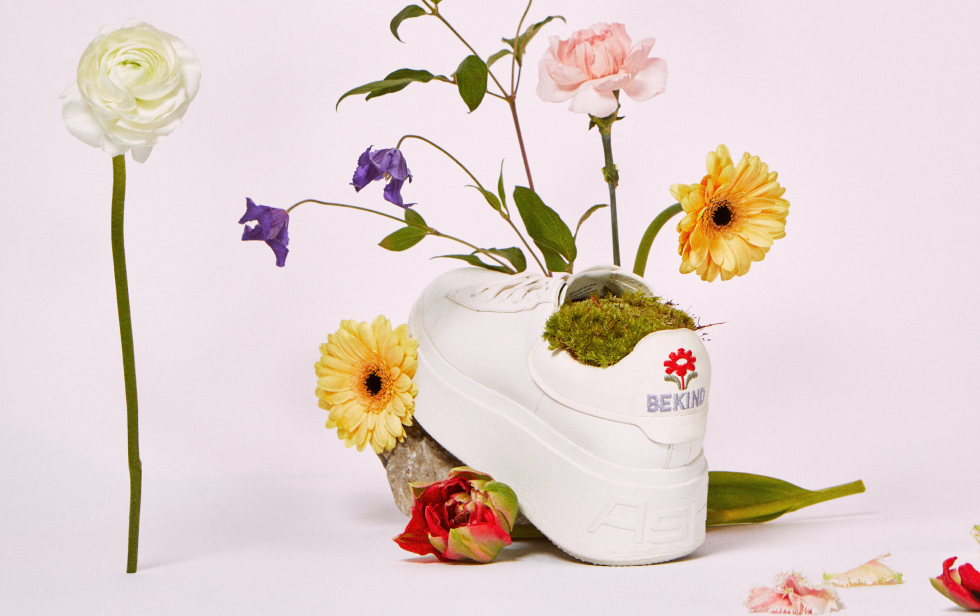
Миниатюрный цветочек стал «меткой» и символом вклада в будущее и защиты нашей планеты, на которой (если мы постараемся быть чуть более осознанными) продолжат расти цветы.
ASH стремится к светлому будущему для своих клиентов. Одна из ключевых задач для бренда — минимизировать вредное воздействие на окружающую среду, используя принципиально новый подход к производству. Свой «зеленый путь» ASH начАЛс запуска RE / ASH, экологически чистой коллекции обуви.
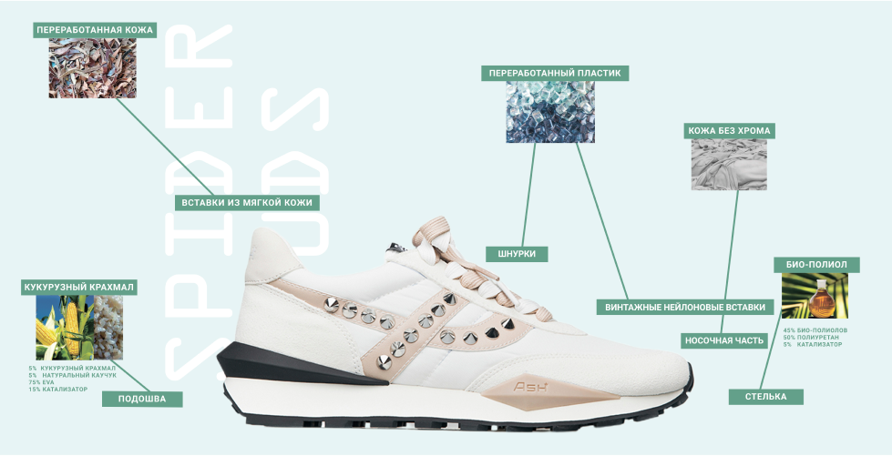
ПЕРЕЙТИ В КАТАЛОГ